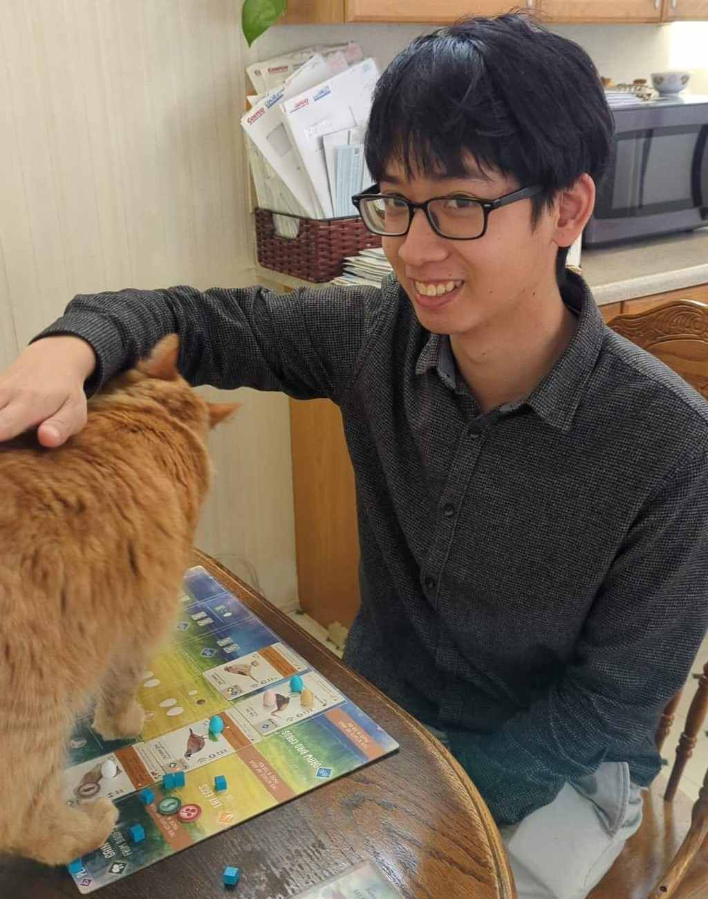
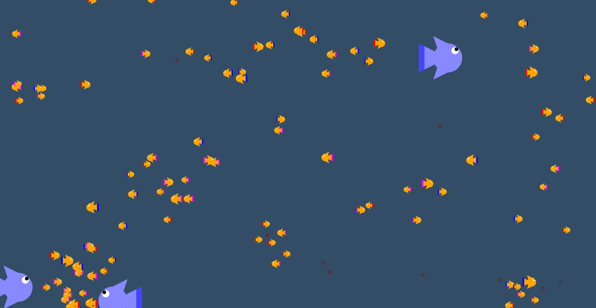
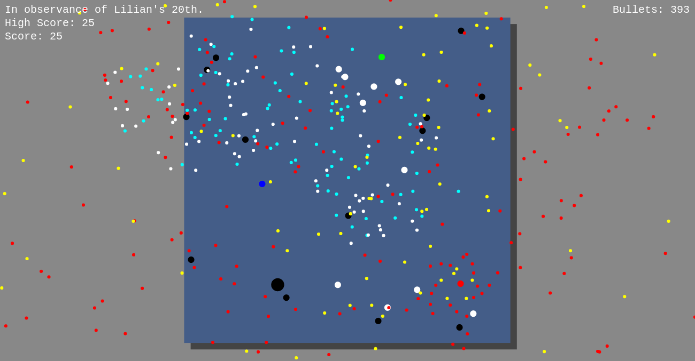
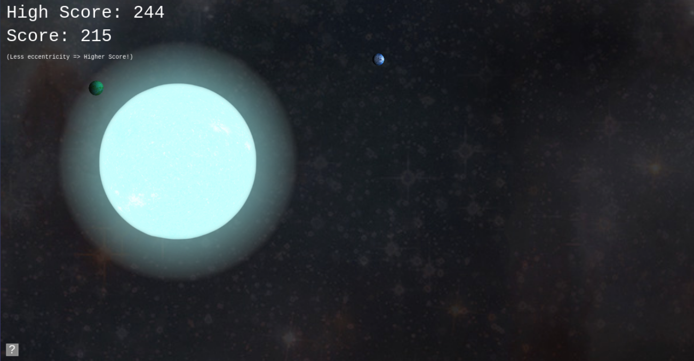

Hello! My name is Kevin.
I'm a Software Engineer with almost 3.5 years of full-time experience in internal tool development.
I currently help Google maintain and improve no-code development platforms for abstract data center modeling and automated material ordering.
Through this pipeline, business planners improve Google Cloud by making abstract changes that are automatically translated into 10,000+ materials per year.
Some examples:
-
Introduced modeling of Software Defined Networking Racks as proper entities, instead of attributes of "full" data centers, by collaborating with business planners and automated material ordering SWEs to design a solution for all. This allowed us to begin tracking these racks, configure their connections at a higher level of detail, and even allowed us to add these into "mini" data centers.
-
Designed and implemented a script to convert Google's private software-defined WAN from border router attributes into entities. The script determined where each WAN node was first referenced, inserted a new entity before this reference, and added relationships between nodes and border routers. This allowed border routers to connect to multiple WAN nodes at once.
-
Supported department horizontal to unify data center change modeling, by rebuilding the automated material ordering system's data change format to be compatible with a new entity-relationship model (from a hierarchical model), with a gradual per-plan rollout. This allows two separate data center change tools to be merged, simplifying workflows.
(My resume includes many more of these examples.)
I get excited about opportunities where I get to design and demonstrate elegant and scalable solutions for complex problems.
I love connecting with new people! You can reach me at kev.chang96@gmail.com.
I got my start in software design by coding up games I could share with my friends! The following games are coded in JavaScript so are loadable and playable in the browser. Just click on the screenshot to play.
Aquarium Simulator
AquaSim was my first major Project,
I drew a tremendous amount of inspiration from PopCap Games's Insaniquarium.
It started with the same idea where you can left-click the screen to drop food for the fish, but I wanted to see if I could push the idea by simulating physics and by having more complicated interactions between fish (e.g. preferring to be next to fish with the same color).
Some fun memories:
- I initially had fish accelerate at a constant rate towards food.
However, since the food was also falling, this ended up causing the fish to miss the food, and then they would begin orbiting the food due to the constant inward acceleration!
This was solved through adding water resistance to reduce the fish's perpendicular momentum.
-
At one point, I had a main-loop that would count the milliseconds since the last loop ran, would calculate position and velocity changes based on the time delta, and render the game state.
However, this meant that computers that rendered more quickly would have shorter times before loops, leading to a better approximation of the game state.
I ended up separating the physics and rendering, and having the physics loop operate on a fixed time step.

Click on the image above to play.
Loch Best Monster
Loch Best Monster was a game I wrote for a birthday!
It was inspired by a genre of video games where you dodge a ridiculous amount of bullets.
(In my opinion, it's easier than it looks.)
Some fun memories:
-
I recall having just learned about Composition-over-Inheritance while creating this game,
so the enemies in this game have a "movement" component and a shooting component.
I haven't added enough enemies for this design to make a big difference, and would love to revisit this game sometime.
- The birthday recipient described this as a stressful experience.
To play, use your mouse to lead the green dot around to collect the blue dots (representing fish). Avoid everything else!

(Click on the image above to play.)
SpaceBox (collaboration)
Click on the image above to play.
SpaceBox was created for a Rice Hackathon effort with my friends Haihao Liu,
Osmond Wen, Kevin Guo! It's an n-body gravity simulator with scoring mechanics. Start by clicking
anywhere and holding the mouse down to create a star. Then click,
hold, and drag to throw a planet into orbit! The lower the
eccentricity of an orbit you throw, the higher your score for that
planet!
Some fun memories:
-
We spent a lot of time trying to figure out how to fit so many actions on one mouse button: moon/planet/star selection, and velocity.
An early draft required users to fling the planets, which lead to so many new problems,
like accidentally releasing a stationary planet with velocity (which lead us to consider thresholds),
or flinging a planet with great initial velocity but slowing down before releasing the mouse button (which lead us to consider an average speed across the threshold).
Thankfully, the slinging version of these controls allowed us to sidestep so many of these problems.
- Surprisingly, the heaviest math in this project came not from the gravity simulation, but the Google Maps style of zooming at a point with the scrollwheel.

Click on the image above to play.